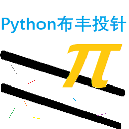

PynAndPi：Python GUI Buffon’s Needle#

作者：樊圃
版本号：1.2.3a1
tips: 建议认真读完！
0x00：文件结构#
以下为主要文件结构树。
PynAndPi/ - pyn 与 pin 形似，意为针，其中 py 代表 Python；pi 即圆周率。
|
|- main.pyw - 运行入口
|
+- pinandpi/ - 一个 Python 包，可用 'import pinandpi; pinandpi.main()' 运行。
|
|- __init__.py
|
+- doc - html 文档 \(^O^)\
|
+- imagine/ - 算法包
|
+- src/ - 源码文件夹
|
|- __init__.py
|
|- history.txt - 与 src 内程序关联的历史记录文件。
|- config.ini - 配置文件，INI 格式
|
|- config.py - 配置程序
|- readhistory.py - 展示读取历史记录的方法
+- run.py - 主程序文件
0x01：打开方式#
点击
main.pyw运行。
在 1.0 版本加入: 此版本可以直接运行，也可作为 Python 模块（包）使用，
作为模块时请将 pinandpy 文件夹放入 PYTHON/Lib/site-packages 文件夹中。
（但是一个单体 GUI 程序也不需要被 import 呵呵 😃 ）
作为模块，不传到 PyPI 上就是可惜了！可是我不会……
0x02：程序特点#
使用 Python (CPython) 编写，没有命令行窗口，
只有使用 tkinter 自制的 GUI 界面。
注：
若使用
.pyw文件 双击运行，则没有命令行窗口；若将扩展名改为
.py，则会有命令行窗口；在
IDLE Edit Window中运行，则有 IDLE 交互界面。
界面力求 简洁大方，希望大家喜欢 :D
0x03：程序“玩法”#
pass # Python 关键字，什么也不做，占位用。
开个玩笑哈哈。 😉
点击
开始投针；在
控制区选择模式：持续模式会一直投针，若不画新针则每 500,0000 根针刷新一次π值；
非持续模式可以选择每次投的针数，也有画针/不画针的区分。
按钮变为淡蓝色即为开启，白色为关闭。
按
重新开始会清零当前进度。在
功能区有开始按钮和选择投针数的按钮。投针期间开始按钮会变成停止，且其他按钮不能用。历史记录中，可以选取历史记录，也可以保存进度，还有依靠matplotlib的记录分析。matplotlib是 Python 的第三方包（跟数学有关的总离不了numpy,matplotlib,pandas）, 需要下载安装。 在命令行中：...> python3 -m pip install --upgrade numpy ...> python3 -m pip install --upgrade matplotlib
然后，等待下载完成，在 Python 中：
import matplotlib
没有报错就行！ :-)
0x04：注意事项#
尽量不要改动任何文件，可以改变的是 config.ini，即设置文件。
备注
在 1.3 之前，这个文件的更改不会带来任何变化。1.3 以后将加入设置功能。
在 1.2 版本发生变更: 现在，如果用户写入的设置有异常，运行 config.py 可以写回正确数据。
0x05：证明及算法#
见 文档：证明与算法，这可能需要读者有一定的微积分、概率论基础（我是怎么会的就不要问了 :-P）